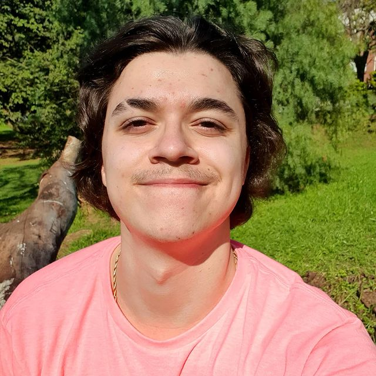

Lições aprendidas:
- Unix
- Git
- GitHub
- HTML
- CSS
- Slack
- Zoom
- Semantic HTML
- Inspect
- Empatia
Lições a aprender:
- Java
- DOM
- Forms
- CSS Responsive
- ES6
- HOF
- Unit Tests
- React
- Node
- SQL
Meu Linkedin
"...O olho do homem é feito de modo que se lhe vê por ele a virtude.A nossa pupila diz que quantidade de homens há dentro de nós.Afirmamo-nos pela luz que fica debaixo da sobrancelha.As pequenas consciencias piscam o olho,as grandes lançam raios.Se não há nada que brilhe debaixo da pálpebra,é que nada há que pense no cérebro,é que nada há que ame no coração.Quem ama quer,e aquele que quer relampeja e cintila.A resolução enche os olhos de fogo:admiravel fogo que se compõem da combustão de pensamentos timidos. Os teimoso são sublimes.Quem é apenas bravo tem só um assomo,quem é apenas valente tem só um temperamento,quem é apenas corajoso tem só uma virtude:o obstinado na verdade tem a grandeza.Quase todo segredo dos grandes coraçoes esta nesta palavra:"perseverando".A perseverança esta para coragem como a roda para a alavanca:é a renovação perpétua do ponto de apoio.(...) Na ordem dos fatos morais o cair não exclui o pairar.Da queda sai a ascensão.Os mediocres deixam-se perder pelo obstaculo especioso...
...Não assim os fortes.Parecer é o talvez dos fortes,conquistar é a certeza deles."